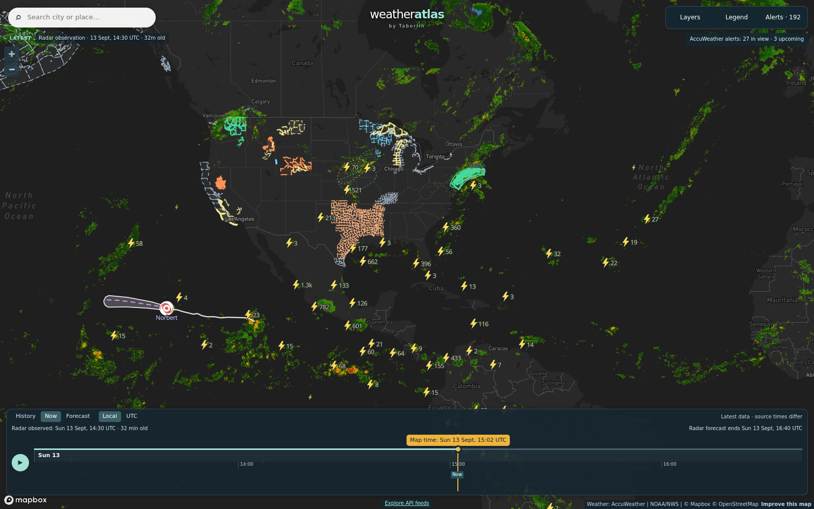

Daily severe-weather intelligence for LNG, refining, offshore, and terminal operators.

Live radar + lightning, 13 Sept 14:30 UTC — TS Norbert weakening well west of Baja California; intense lightning clusters over the central US and Texas; scattered Gulf Coast convection. Interactive radar + hurricane tracker: accuweather.taborlin.co.
| System | Status | Energy-asset impact |
|---|---|---|
| Atlantic / Gulf / Caribbean | QUIET | No tropical cyclones; NHC monitoring a central-Atlantic tropical wave (no US threat) — Gulf LNG/refining corridor clear through the 7-day outlook |
| TS Norbert (E Pacific) | WEAKENING | 50 mph, WNW over open water 1,500 mi east of Hawaii; remnant low by Tue, dissipating Wed — remnant moisture reaches Hawaii Thu as showers only; no threat to ECA LNG or Pacific tanker lanes |
| Invest 90W (W Pacific, near Pohnpei) | LOW / 24H | Rated low for development; drifting NW toward the northern Marianas over 2-3 days — no LNG/major asset exposure yet; monitor for NW Shelf cyclone-season watchers |
| Gulf Coast convection | ACTIVE TONIGHT | Scattered overnight t-storm windows along the LA/TX coast — AccuWeather reads 51% at Port Fourchon ~2-3 AM while free feeds read 2% and "clear" |
| First autumn cold front | WED-THU | Strong high behind the front drives fresh-to-strong NE-E winds and rough seas over the northern Gulf Wed-Thu — barge/OSV/lightering schedules need margin; improving late week |
Same hour, same coordinates (Port Fourchon corridor, Louisiana Gulf Coast, tonight 2 AM), two very different answers about the overnight thunderstorm window:
Best 36-hr work window of the week now through Monday — then a 51% overnight t-storm window the free feeds read at 2%. Wednesday front: rough seas, barge scheduling heads-up.
Full asset brief →94-98°F peak heat with SE gusts to 29 mph today; AccuWeather holds a 37-40% overnight t-storm window the free feed reads at 1-3%.
Full asset brief →Afternoon 51% t-storm window (2 PM CDT hour) vs free-feed 15% "partly cloudy" — the divergence pattern repeats a third straight day on this dock.
Full asset brief →Quiet 24 hours (gusts ≤ 23 mph); midweek front brings the first fresh-NE wind test of the fall to the Sabine corridor — brief live-embedded.
Full asset brief →